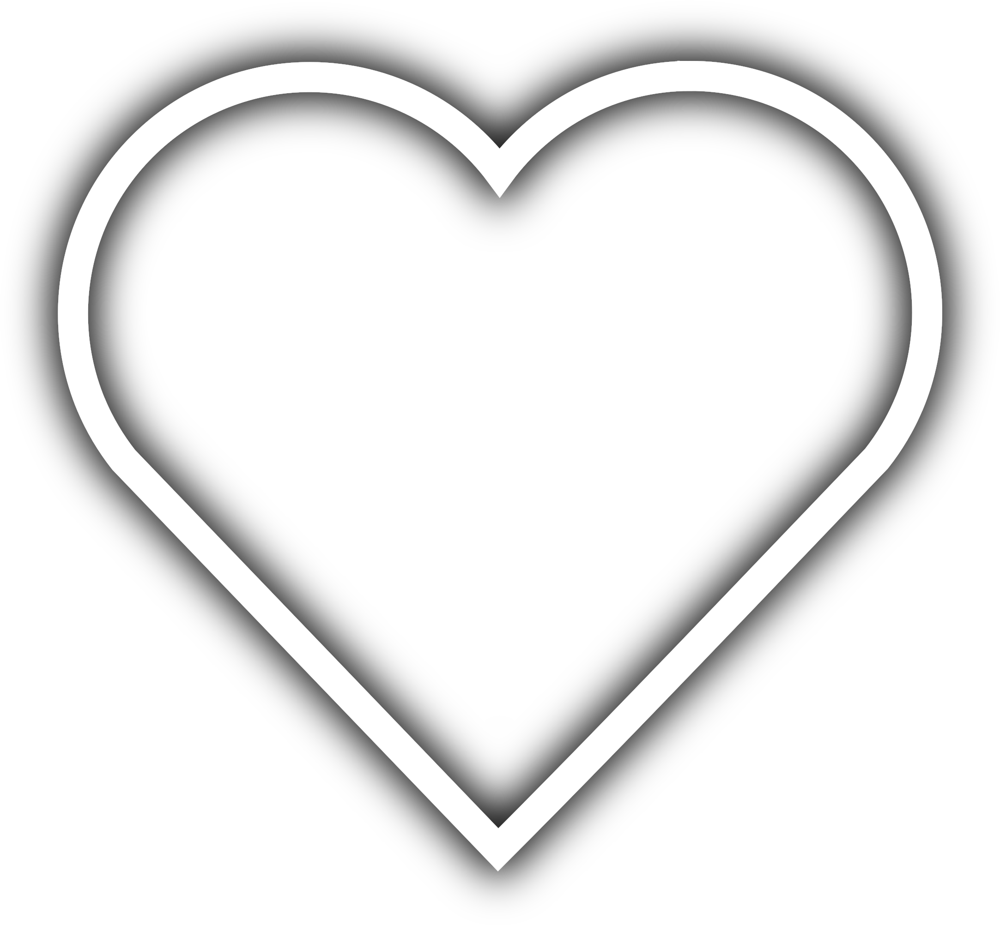

Thank you for everything you did to me.
Hey babe. I know you've been wondering what this "gift" has been, and i think that you've lost all hope by now, but I want you to read this and I want you to read this carefully. Since day one I met you, your entire personality changed me. The vibe you gave off, the feelings you made me feel, the way you made me completely forget my loneliness, it all changed me. I know you may already be thinking "Oh well, just another love letter", but this is not just your daily love letter.
When we met, not even my soul would know that we would end up loving eachother, because i thought i was just talking to another person on AnonChat. All i remember from that night is that the way you talked was really unique. The way you were so.. happy, it was really interesting to me, and I thought you were just feeling good or something.
We started talking in your DMs about TaekWonDo, and god knows I was having the time of my life just speaking with you. Like, the way you were expressing your feelings, I couldn't understand how it was so full and wholesome. At that moment, I knew that I had found myself somebody to show love to, even after months of grief and loneliness. I never thought I'd even say this, but you've made me heal mentally so much, that it's actually starting to affect me physically. I'm starting to feel much better after getting up, and I feel like i have a purpose to serve - to love you.
I started walking with more confidence, I started loving myself more, and most importantly, I started feeling everything again. Before I met you, I was just about to lose my sanity, but you were the person who saved me from it. If it wasn't because of you, I'd probably not even be who I am by now, and I would've lost every single one of my feelings - but thanks to you, I lost nothing; I even started feeling things I had never felt before, and it made me proud to enjoy living.
And before I knew it, I was actually loving you more than anything else. It wasn't something to be ashamed of - I was even proud of it, because I could finally feel love.
I'm writing this for you in the hopes of being able to write another one for you on your next birthday. I never want anything from you besides loyalty and love, and I want you to actually show me both. I want you to not destroy me; I want you to help me actually enjoy my life, because without you, my life would be useless.
I'm writing this for you to realize how much I love you for who you are. You are the cutest girl I've ever met and I don't give a shit about what other people think. I think that you are the cutest, smartest, and most importantly, the most loving girlfriend I could possibly ever find.
I don't want you to feel shy, I want you to be confident in who you are. I want you to be sure that you are really my one in the 8 billion, and I want you to show yourself more love. I want you to know you are actually cute as fuck, I want you to know you're smart, I want you to know that you're perfect, no matter what anybody says about you.
And most importantly, I want you to always remember me wherever you go. I don't want to be forgotten by you.

Your boyfriend, Aria <3